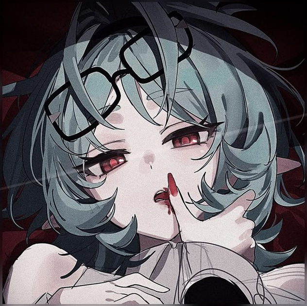
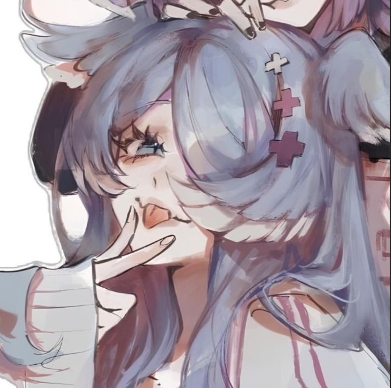

01 / МУЗЫКА
Настроение в один клик.
Собери очередь и управляй музыкой прямо в Discord.
ВОСПРОИЗВОДИТСЯMidnight CityM83 · Hurry Up, We're Dreaming
01:2404:03
Модерация, ИИ-общение, музыка и уровни — в одном боте для Discord.

Есть кто сегодня в войс?
Всем привет. Кто хочет собрать компанию?

Я зайду через пять минут.
Четыре направления. Без длинных обещаний.
Фильтры, очистка, блокировки и ограничения.
↗Vivian может участвовать в беседе.
↗Очередь, плеер и управление треками.
↗Ранги, достижения и личные голосовые.
↗Собери очередь и управляй музыкой прямо в Discord.
Опыт, уровни и достижения участников — в одном профиле.
Передвинь ползунок и сравни русский и английский примеры модерации Vivian.


Попробуй команды Vivian прямо здесь. Ответы демонстрационные; Discord-сервер не затрагивается.
/helpКоманды+Список команд и возможностей Vivian.
/pingЗадержка+Проверить отклик Discord.
/activityАктивность чата+Показать активность участников сервера.
/rankРанг участника+Открыть опыт и достижения участника.
/playВоспроизвести+Найти трек и добавить в очередь.
/queueОчередь+Посмотреть текущий трек и очередь.
/skipСледующий трек+Пропустить текущий трек.
/pauseПауза+Приостановить воспроизведение.
/resumeПродолжить+Возобновить музыку.
/stopОстановить+Остановить очередь и отключить плеер.
/muteМут участника+Ограничить участника на заданное время.
/unmuteСнять мут+Вернуть участнику возможность писать.
/banБлокировка+Заблокировать участника. Требуются права.
/kickУдалить участника+Исключить участника с сервера.
/clearОчистить сообщения+Удалить последние сообщения.
/slowmodeМедленный режим+Установить задержку между сообщениями.
/lockЗакрыть канал+Ограничить отправку сообщений в канале.
/unlockОткрыть канал+Снять ограничение на отправку сообщений.
/veyrПанель VEYR+Открыть панель состояния сервера.
Ничего не найдено.
Введи команду или выбери её слева.
Выбери команду, чтобы увидеть пример ответа.
Условный пример того, какие задачи Vivian может взять на себя.
В Discord используй /help. На этой странице есть поиск по командам.
Нет. Команды на сайте — локальная демонстрация. Они не выполняют действия в Discord.
Перейди по кнопке «Добавить Vivian». Выбери сервер и подтверди добавление в Discord.
Переключатель RU / EN переводит весь сайт. Ползунок в блоке модерации позволяет сравнить оба примера.